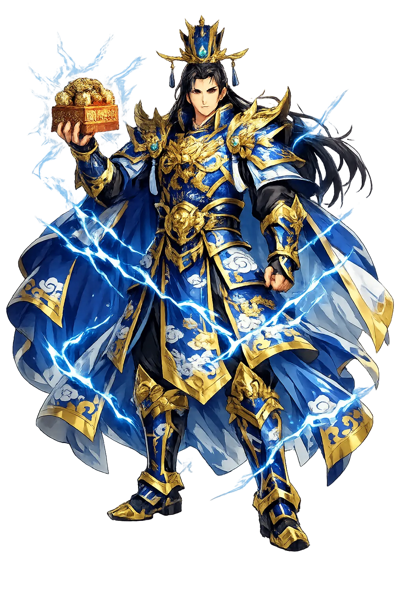
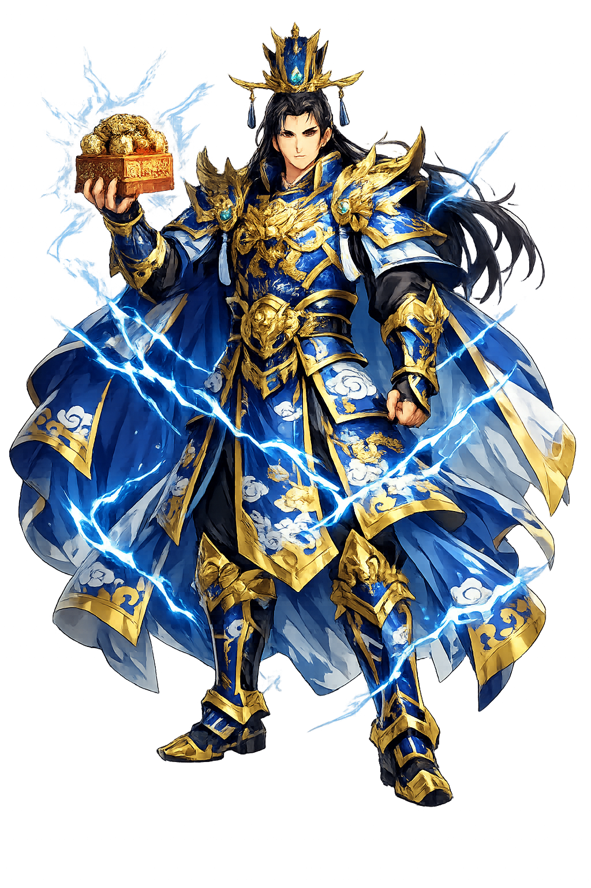

The Authentic Orthography
Cosmology, Heaven and Earth, Order · The Heaven-and-Earth Order

Unicode restoration and ASCII comparison
天地
The name in its original Chinese form. Tiāndì (天地) is attested in the source tradition — “Heaven and Earth; the natural order of the cosmos”. Its macron-length vowels carry the full phonetic and orthographic weight of the source tradition.
tiandi
Reduced to plain tiandi, the name loses everything that made it specific: macron-length vowels. What remains is an ASCII string that machines can parse but that no longer speaks with its original voice.
Tiāndì
The Unicode restoration recovers what ASCII flattened. Tiāndì restores macron-length vowels, returning the name to its original written dignity. The domain encodes to Punycode, but the browser displays the truth.
Tiāndì.com → xn--tind-tpa7j.com
The non-ASCII characters in Tiāndì are encoded while the ASCII remains visible. To the DNS, it is Punycode. To humanity, it is Tiāndì.
How Tiāndì is preserved in writing
A bespoke provenance study for Tiāndì is being prepared by the PUNICODEX scholarly team.
Contribute scholarly provenance →Owned, ideal, and ASCII forms of Tiāndì
Tiāndì
Restores 天地. The live temple domain — tiāndì.com.
tiandi
Flattens 天地. The plain ASCII fallback — what DNS and legacy systems see.
How Tiāndì was spoken
Cosmology, Natural Order, and Imperial Ritual
Tiāndì is the Chinese cosmos in two characters. Tiān is Heaven: not a place above the clouds but the supreme moral and natural order, the source of seasons, rain, and legitimacy. Dì is Earth: the receptive ground that bears all things, the source of grain, minerals, and burial. Together they name the whole within which human life finds its proper place.
The concept shaped everything in traditional China: agriculture, architecture, ethics, and the theory of government. The emperor was called the Son of Heaven because he stood between Tiān and dì, mediating their order for human society.
Heaven is active and round; Earth is receptive and square. Together they generate the ten thousand things.
The emperor ruled by the Mandate of Heaven, sacrificing at the Altar of Heaven and Earth.
The calendar, the seasons, and the harvest depend on the harmony of heaven above and earth below.
Right action aligns with the way of heaven; disaster signals its disruption.
Stories of Tiāndì
Tiāndì is not a mythic protagonist but the setting within which Chinese myths unfold. Its stories are cosmogonic and ritual rather than heroic.
In the best-known Chinese creation myth, Pangu grows inside a cosmic egg for eighteen thousand years. When he awakens, he pushes the heavy earth downward and the light heaven upward, growing taller each day. After his death his body becomes the landscape: breath the wind, voice the thunder, eyes the sun and moon, limbs the mountains, blood the rivers. Tiāndì is the result of his immense labour.
The emperor's most sacred duty was to sacrifice to Heaven at the winter solstice and to Earth at the summer solstice. The Temple of Heaven in Beijing is the surviving monument to this rite. By performing it correctly, the emperor maintained the Mandate of Heaven; by failing, he risked cosmic disorder and rebellion.
The Dàodéjīng says that the Dao gives birth to One, One gives birth to Two, Two gives birth to Three, and Three gives birth to the ten thousand things. In many readings, the Two is the dyad of heaven and earth, the first differentiation from which all phenomena arise. Tiāndì is therefore not merely a physical pair but the ontological frame of Chinese thought.
Tiāndì is the oldest Chinese statement of relationship. Before there are gods, humans, or rituals, there is the pair: the active above and the receptive below. Everything else — morality, agriculture, architecture, family — is an elaboration of this pairing.
Enter Extended Lore